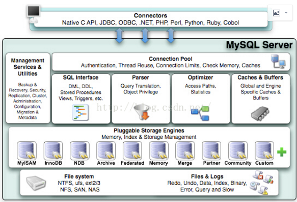

mysql体系结构
server层
存储引擎层
innodb存储引擎架构
innodb内存池组成
1、缓冲池
2、重做日志缓冲区
3、额外缓存池
innodb后台线程
1、Master Thread
2、IO Thread
3、Purge Thread
4、Page cleaner Thread
innodb内存刷新机制
mysql体系结构

server层
1、连接池组件
2、管理服务和工具组件
3、SQL借口组件
4、查询分析器组件 解析sql语句，解析成树状结构
5、优化器组件
6、缓冲组件
存储引擎层
7、插件式存储引擎
8、物理文件
sql语句 --> query cache --> 解析器 --> 处理器 --> 优化器 --> 执行计划 --> 存储引擎 --> 获取数据
、 server层 | 存储引擎层

innodb存储引擎架构

物理存储

逻辑存储单元
页 16k （oracle中为8k）
页头：存储事务信息，锁信息，指针，checksum值
页身：存储实际的行数据，一个页身最多存储7992行数据
页尾：checksum值，页尾和页身的值必须一致
区 64个连续的页组成 64*16k=1M
段 一个大数据段由4个区组成 4M
表空间
innodb IO的最小单位是页，读取一行数据的时候，将该行数据的整个页读取到内存中国，以提高内存的命中率（内存读 /（内存读+磁盘读））
innodb内存池组成

1、缓冲池
数据页
索引页
插入缓冲
自适应哈希索引
锁信息
数据字典
innodb_buffer_pool_size 定义缓冲池大小
innodb_buffer_pool_instances 定义缓冲池个数
show engine innodb status; 查看大小和个数
LRU
一般的数据库缓冲池通过LRU（latest recently used，最近最少使用）算法来进行管理，即最频繁使用的页在LRU列表的前端，最少使用的在LRU的尾端；
innodb的缓冲池稍有不同，其在LRU中加入了midpoint位置，新读取的页，放在LRU列表的minpoint位置，minpoint之前的列表称为new列表，之后的称为old列表，可以理解new列表里面的页都是最为活跃的热点数据；
innodb_old_blocks_pct来控制midpoint的位置，值是百分比
nnodb_old_blocks_time用于表示页读到midpoint后，需要等待多久才会被加入到LRU列表的热端，这样做的好处是如果一读到minpoint就放到热端，可能会被其他查询给挤出LRU列表，这种查询一般是作为索引或数据的扫描工作，并不是热点数据，所以需要有个时间来进行控制。
2、重做日志缓冲区
innodb存储引擎先将重做日志放在这个缓冲区，然后按照一定频率将其刷新到重做日志文件，重做日主缓冲区一般不需要设置得非常大，因为一般每一秒都会有重做日志缓存刷新到日志文件，只需要保证每秒产生的事务量在这个缓冲区大小内即可。
innodb_log_buffer_size控制重做日志缓冲区大小，默认为8M；
3、额外缓存池
在对一些数据结构本身进行内存的分配时，需要从额外的内存池中申请内存，当该区域不够的时候，会从缓冲区中进行申请。一般申请了很大的innodb缓冲池时，也应该考虑相应的增加这个值。
innodb后台线程
1、Master Thread
核心线程，主要负责将缓冲池中的数据异步刷新到磁盘，保证数据的一致性，包括脏页的刷新、合并插入缓存、undo页的回收等；
loop 主循环（繁忙）和 background loop 后台循环（空闲）切换操作
2、IO Thread
IO Thread用AIO（异步IO）来处理IO请求，这样极大的提高了数据库的性能。innodb中分别有4个IO Thread，分别是write thread（4个）、read thread（4个）、insert buffer thread（1个）、log thread（1个）；
innodb_read_io_threads、innodb_write_io_threads参数进行设置
show variables like 'innodb_%_io_threads'；
3、Purge Thread
事务提交后，undo log可能不再需要，因此需要purge thread来回收已经分配使用并分配的undo页
innod_purge_threads来控制purge thread的个数；
4、Page cleaner Thread
将脏页的刷新操作放到单独的线程中来完成（innodb1.2x之前的版本，脏页刷新是由master thread来完成的），目的是减小原master thread的工作及对于用户查询线程的阻塞，进一步提高innodb的性能；
innodb内存刷新机制
日志先行策略，先写日志，再写文件。
redo log
每个InnoDB存储引擎至少有1个redo log文件组，每个文件组下至少有2个redo log文件。为了得到更高的可靠性，可以设置多个mirrored log group，将不同的文件组放在不同的磁盘上。日志组中每个redo log文件的大小一致，并以循环方式使用。InnoDB存储引擎先写redo log文件1，当达到文件的最后是，会切换至文件2，当文件2也被写满时，会再切换到文件1中。
innodb_log_file_size 参数指定了redo log文件的大小；
innodb_log_files_in_group 参数指定了redo log文件组中redo log文件的数量，默认为2；
innodb_mirrored_log_groups 参数指定了日志镜像文件组的数量，默认为1，代表只有一个文件组，没有镜像；
innodb_log_group_home_dir 参数指定了日志文件组所在路径，默认在数据库路径下。
innodb_flush_log_at_trx_commit 参数决定redo log的刷新机制
0：每隔1秒刷新一次
1：实时刷新（默认）
2：交由操作系统管理
试想，当文件2写满了，切换到1的时候，覆盖1里面的内容，那之前的redo log不是没有了吗，这时候引入checkpoint概念，当发生日志文件切换的时候，产生checkpoint，将缓冲区里的脏数据刷回磁盘。这是其中一个脏页刷回磁盘的条件。还有一个是通过innodb_max_dirty_pages_pct参数（脏页占缓冲区的比率，默认75%，建议设置成20%-50%）来控制脏页的刷新。
bin log
sync_binlog 参数决定bin log刷新机制
1：实时刷新（默认）
0：交由操作系统管理
（2，3，4......n）：n个事务刷新一次